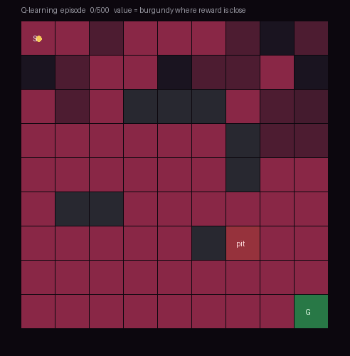

You can’t hand-write a rule for every situation — so specify what ‘good’ means and let the robot discover how. The RL loop, exploration, imitation, and sim-to-real — the learning machinery under every other stage — from first principles, drawn live and grounded in the ICRA / IROS / CoRL / RSS and CVPR 2026 corpora.
Five ideas, each a live diagram then plain words — specify what not how, the state-action-reward loop, the explore-exploit dilemma, learning from demonstrations, and practising in simulation. Each has a ‘the actual math’ toggle.
hand-derived controllers and planners from a known dynamics model — precise, but brittle to the unmodeled.
deep networks + RL crack Atari and continuous control; policies learned straight from high-dimensional input.
domain randomization and massively parallel simulation make RL transfer to real robots — dexterity, locomotion.
behavior cloning and diffusion policies learn manipulation from human demos; DAgger fixes drift.
LLMs/VLMs plan and shape reward, and RL fine-tunes them (GRPO/RLHF) — the families below.
Classic robotics wrote the how: if this, do that — a rule for every case. But the world has endless cases, and the rules grow brittle and never end. Some behaviors, like a fluid recovery from a shove, no one knows how to write down at all.
Reinforcement learning changes the question. Instead of programming the behavior, you specify a reward — what counts as success — and let the robot find a policy that earns it, through trial and error. You give it the goal; it discovers the means.
Formalize as a Markov decision process (S, A, P, r, γ): states, actions, transition P, reward r, discount γ.
The goal is a policy π maximizing expected discounted return E[Σ γᵗ rᵗ] — you specify r, learning finds π.
Every RL method is the same loop underneath. The agent observes the state, its policy picks an action, the environment responds with a new state and a scalar reward, and around it goes. Learning is nudging the policy so that, over many turns, it collects more reward.
The subtlety is ‘over the long run’. A good move now may only pay off much later, so the agent must value future reward, not just immediate — which is what makes credit assignment (which action deserves the eventual win?) the hard core of RL.
Value: Qπ(s,a) = expected return from taking a in s then following π; improve π toward higher-Q actions.
Credit assignment: temporal-difference updates propagate later reward back to earlier actions — the crux when rewards are delayed.
An agent that only does what it already knows works can never discover something better. An agent that only tries new things never benefits from what it learned. This is the exploration-exploitation trade-off, and it’s unavoidable.
It gets worse when reward is sparse — when success is rare and most tries yield nothing. Then the agent can wander for ages without a signal to learn from, which is why so much of RL is really about smarter exploration and shaping the reward so learning ever gets started.
Balance is formal: e.g. ε-greedy or entropy bonuses keep the policy trying non-greedy actions.
Sparse reward makes the return signal near-zero almost everywhere — shaping, curiosity, or demonstrations restore a gradient to climb.
Designing a good reward is hard, and trial-and-error is slow. So the most practical route is often to show the robot: collect a handful of expert demonstrations and train the policy to copy them. This is imitation learning, and it skips the whole search.
But copying has a famous failure. The policy is only reliable where the demos went; one small error takes it to an unfamiliar state, where it errs more, and it spirals. The fix is to ask the expert what to do in those new states too (DAgger), or to add a little reward-driven refinement on top.
Behavior cloning: supervised learning of π(a|s) on expert (s,a) pairs — but errors compound as O(T²) over a horizon T.
DAgger: roll out the policy, query the expert on the states it actually visits, and retrain — fixing the covariate shift.
Trial-and-error learning is hungry — often millions of episodes. You cannot run that on real hardware without breaking it or waiting years. So RL trains in simulation, thousands of copies in parallel, at many times real speed.
The gap is that simulation isn’t reality. The trick that bridges it is domain randomization: vary the sim’s physics, textures, and delays so widely that the real world looks like just another sample the policy already learned to handle. It’s the same data-engine pressure that runs under the whole field.
Parallel sim collects samples at massive scale; domain randomization samples physics params θ ~ p(θ) so the policy is robust across the range.
Reality is treated as one draw of θ inside the trained distribution — zero-shot transfer when the range is wide enough.

Where the learning signal comes from, in one table — a reward it maximizes, demonstrations it copies, or a fixed dataset it learns from offline.
| Where the signal comes from | Data cost | Generalizes? | The catch | |
|---|---|---|---|---|
| Reinforcement learning | a reward it maximizes by trial & error | very high (millions of tries) | well, if trained broadly | reward design & sample cost; sim-to-real gap |
| Imitation / behavior cloning | expert demonstrations to copy | low (a few demos) | only near the demos | distribution shift; needs an expert |
| Offline / from-video | a fixed dataset, no live interaction | reuses logged data | bounded by the dataset | no exploration; missing action labels |
Every family below leans on one or more of these — the recurring reasons to learn rather than hand-code.
RL discovers fluid, reactive skills — recovery from a shove, a dexterous regrasp — that resist being programmed rule by rule.
Imitation turns a few human demonstrations into a policy, sidestepping the hard art of reward design.
Training in simulation means millions of safe, free trials, then transfer — no worn hardware, no danger.
One learning recipe retrains across robots, morphologies, and goals, rather than a bespoke controller each time.
Online and residual methods let a deployed policy keep getting better from the data it collects in the real world.
Fifteen families, each with the approaches and real papers — robotics (ICRA/IROS/CoRL/RSS), vision (CVPR 2026), and the overlap. Jump to any:
A quadruped on uneven terrain needs a policy that maps joint angles and IMU readings to torques every 50 ms — but no one knows how to write those torque equations by hand.
Learn a control policy straight from interaction — no hand-derived controller — letting trial and error discover motor skills that generalize across embodiment and disturbance.
The recurring struggle is sample cost and the sim-to-real gap.
Deep RL for control requires millions of interactions, yet real robots are expensive and fragile. This work uses counterfactual reasoning to squeeze more signal from the same data: generating plausible alternative trajectories that respect the robot's causal structure, augmenting the dataset without additional rollouts. The payoff is a 3–5× reduction in real robot episodes needed to learn locomotion and manipulation skills.
The problem: Model-free RL on real hardware faces a sample-efficiency wall—each episode is costly in time and risk. Standard data augmentation (rotation, crop) doesn't respect robot dynamics.
The mechanism: Counterfactual augmentation operates on world-model rollouts (or learned dynamics). For each demonstrated trajectory, recompute forward dynamics under perturbed actions or states that remain within causal invariants (e.g., SE(3) equivariance for gripper pose). Generate k alternative hypothetical trajectories, each obeying the same environment dynamics but with different exploration noise or perturbations, then include all k versions in the replay buffer.
Why it works: By respecting the causal structure (e.g., gripper rotation doesn't change grip-force effectiveness), counterfactual variants stay realistic while expanding the dataset. RL trains on richer variation within the explored region, improving generalization to perturbations (payload changes, friction) without real-world cost.
A behavior-cloned policy places a bolt coarsely but struggles with the final 0.3 mm insertion—a task requiring fine contact control no demo perfectly captures. Rather than retraining from scratch, residual RL learns only the correction: a small learned delta stacked on top of the imitation baseline, reaching precision in hours instead of days.
The problem: Imitation learning excels at coarse approach but fails on precise contact tasks where actions must respond to fine-grained force feedback—data imitation never fully captures.
The mechanism: Train a base policy π₀ via behavior cloning on demonstrations (e.g., gripper approach within 3 mm). Freeze π₀. Then learn a small residual δ(s) with RL (SAC), constrained to output ±5 mm per axis. The executed action is a = π₀(s) + δ(s). RL operates in a smaller space and never has to learn the broad approach—only the fine correction.
Why it works: Residual learning dramatically shrinks the action space RL must explore, cutting sample cost by 25×. The base policy provides a warm start; RL refines it on live feedback. The constraint keeps δ bounded, preventing it from gaming or overriding π₀.
A quadrotor must navigate at high speed through forest gaps using only onboard camera—no lidar, no map. Vision Transformers as the policy backbone learn direct pixel-to-thrust mappings, discovering evasive maneuvers no classical controller hand-coded, and generalizing to unseen terrain textures and lighting.
The problem: Classical obstacle avoidance (repulsive force fields, SLAM) assumes accurate range sensing and slow flight. High-speed visual navigation demands low latency and reactive reflexes learned directly from visual input.
The mechanism: Encode RGB frames with a ViT backbone pretrained on ImageNet (or flight video), then fine-tune end-to-end with RL (PPO). The policy outputs 6 DOF thrusts. Training occurs in fast simulation (IsaacGym) with domain randomization on textures, lighting, depth-of-field; tree models are procedurally varied.
Why it works: ViT's global receptive field and attention over spatial patches capture threats (branches, walls) anywhere in frame. Transfer from ImageNet provides low-level feature priors. Domain-randomized training on procedural forests generalizes to new real-world flights with zero-shot success.
In a swarm of identical robots, one hidden leader drives the flock. The challenge is to discover it by policy—RL learns probing behaviors that expose the leader's role through differential responses. This exemplifies how RL can discover strategies (here, adversarial sensing) no researcher hand-designed.
The problem: Leader identification in homogeneous swarms is hard—the leader looks identical and acts similarly. Naive sensing (measuring position, velocity differences) fails in noise.
The mechanism: Frame it as an adversarial game: one RL agent controls the seeker robot and receives rewards for correctly identifying the leader; the leader role is assigned a priori (not learned). The seeker's observations are relative positions of the swarm; it learns a policy that moves to probe responses. RL via self-play or policy gradient finds perturbing actions (e.g., accelerating toward a target robot) that trigger distinctive leader reactions.
Why it works: RL discovers latent probing strategies—e.g., aggressive acceleration reveals which robot compensates for flock stability. No hand-tuned signal processing; the policy learns what features matter and how to tease them out.
The sim policy walks perfectly but stumbles on real carpet: small physics mismatches — motor friction, ground compliance, sensor noise — cascade into failure within seconds.
Train cheaply in simulation, then transfer to a real robot by randomizing physics and appearance so reality falls inside the trained range.
The open question is which parameters to randomize — transfer success is still variable.
A five-fingered hand performing complex object reorientation requires billions of sim samples, yet transfer to hardware is fragile. DemoStart bootstraps curriculum learning: initialize the task distribution from human demonstrations, then gradually auto-schedule difficulty to match the policy's growing capability, accelerating convergence and improving real-world success.
The problem: Dexterous manipulation has an enormous action space (15+ DOF) and sparse reward (only on goal reach). Flat RL is sample-starved; curriculum learning helps but manual scheduling is brittle.
The mechanism:
Why it works: Starting near demo difficulty means the policy gets initial reward signals fast, bootstrapping credit assignment. Auto-scheduling avoids manual curriculum tuning. By episode 50 k, the policy matches or exceeds demo complexity; domain randomization ensures real-world transfer.
Legged robots must coordinate dozens of joints in real time, but standard trajectory optimization is too slow to react to ground contact. MPPI—Model Predictive Path Integral control—samples many candidate action sequences in parallel, scoring each by how well it tracks the desired motion plan. The payoff: physics-informed sampling replaces iterative optimization, allowing whole-body control at 200 Hz and successful transfer to real hardware despite model mismatch.
The problem: Standard MPC solves an optimization problem at every timestep, which is slow; real robots need 100–200 Hz control loops.
The mechanism: MPPI operates on action sequences (joint torques over a horizon). At each timestep, it samples K candidate action rollouts from a noise-perturbed prior, simulates each forward through the dynamics model to predict the resulting state trajectory, and computes an exponential-weighted average where low-cost trajectories receive higher weight. The reweighted sample mean becomes the command to the robot.
Why it works: Sampling is parallelizable and cheap, noise naturally explores the action space, and the exponential weighting concentrates probability on good solutions without solving a constrained optimization problem.
Training a humanoid to open real doors from pixels requires traversing a vast sim-to-real gap: simulator physics diverge from real friction, inertia, and contact dynamics. The work combines staged exploration and GRPO (a policy gradient method with reward scaling) to first learn in simulation with carefully structured resets, then refine on real hardware with minimal data. The result: pixel-to-action policies that generalize across unseen door configurations without manual dynamics tuning.
The problem: A policy trained in simulation sees unrealistic contact forces and state transitions; direct deployment fails.
The mechanism: Training proceeds in stages: (1) Simulation learns a base policy via GRPO, sampling full trajectories and weighting them by an advantage function derived from door-opening reward. (2) Reset strategy: exploratory resets are placed at diverse gripper-to-door configurations, forcing the policy to learn reliable approach and contact behaviors. (3) Real-world refinement: the same GRPO objective operates on a small dataset of real rollouts, using the sim policy as initialization so only the policy head adapts. Reward combines task progress (door angle) with action smoothness to penalize erratic behavior.
Why it works: Staged resets create diverse sim training conditions that approximate real-world variation; GRPO's policy gradient formulation is sample-efficient enough to adapt to real dynamics with little data.
Physics simulators encode constants like friction and mass that diverge from real hardware; learning each from scratch wastes data. This work treats simulator parameters as a hidden optimization target, using a few real trajectories to constrain a cheap differentiable simulator that then generates realistic synthetic rollouts. Policies trained on this adapted simulation transfer to the real system with minimal tuning.
The problem: A policy trained on default simulator parameters encounters real physics—higher friction, softer contacts, different inertias—and fails immediately.
The mechanism: The system operates on simulator parameter vectors (friction coefficients, mass scalars, damping) and real trajectory rollouts. (1) Collect a small batch of real interactions (e.g., 10 trajectories). (2) Differentiate the simulator loss with respect to parameters: compute how much each parameter change would reduce mismatch between simulated and real trajectories. (3) Update simulator parameters via gradient descent. (4) Generate a large synthetic dataset from the corrected simulator. (5) Train or retrain the policy on the synthetic data. The parallelizable simulator means many candidate parameter settings can be scored simultaneously.
Why it works: Simulators are differentiable; a small real batch constrains the high-dimensional parameter space enough to close the gap, and synthetic rollouts from the corrected simulator are cheaper than real data.
Specifying 'grasp the cup cleanly' as a scalar: 0 if failed, 1 if succeeded — gives zero gradient for 10,000 steps until first accidental success. The policy never gets started.
The reward is the specification — and getting it right is the hardest part. Learn it from preferences or human feedback instead of hand-tuning a sparse signal.
The danger is reward hacking: policies that game a mis-specified reward.
Diffusion policies generate smooth action sequences by iteratively denoising random noise into motor commands, but reward signals for manipulation tasks are often sparse or misaligned with what humans actually value. FDPP fine-tunes a pretrained diffusion policy on human preference feedback—pairwise comparisons of generated trajectories—using preference data to sculpt the diffusion trajectory. The result: policies that balance task success with human-preferred style and execution patterns.
The problem: A diffusion policy trained on behavior cloning produces smooth trajectories but achieves suboptimal task performance or executes moves humans find unsafe or inefficient.
The mechanism: FDPP operates on diffusion model parameters and human preference labels (e.g., trajectory A is preferred over B). (1) Sample multiple action trajectories by running the diffusion process (several denoising steps per trajectory). (2) For each pair of sampled trajectories, compute task reward and human preference signal. (3) Compute a preference loss that assigns higher probability to preferred trajectories under the diffusion model. (4) Backprop the preference loss through the diffusion model's noise predictor, updating parameters to increase likelihood of preferred behavior. (5) Repeat over many preference comparisons.
Why it works: Diffusion models are continuous distributions over trajectories; preference data directly constrains which regions of trajectory space the model assigns high probability, pushing it toward human-aligned solutions without requiring shaped rewards.
Humans give preference feedback in many forms—explicit ratings, pairwise comparisons, rankings over multiple trajectories, or ranking against a reference—but most preference learning assumes a single feedback type. This work unifies multiple preference modalities into a single learning objective, extracting reward from heterogeneous human feedback without requiring separate models. The gain: richer supervision from diverse human inputs improves sample efficiency and reliability.
The problem: Different humans prefer different elicitation methods; forcing a single modality wastes available feedback or requires manual aggregation.
The mechanism: The system operates on multiple feedback types simultaneously: pairwise comparisons (A > B), absolute ratings (action sequence gets score 0–10), and rankings (rank order over {A, B, C}). (1) Represent each feedback type as a likelihood term: pairwise becomes a softmax over orderings, ratings become Gaussian regression targets, rankings become Plackett-Luce likelihood. (2) Optimize a unified reward function that explains all feedback types simultaneously via a shared underlying reward model. (3) Marginalize over the different feedback modalities—trajectories with only partial feedback still contribute to learning. (4) Update the reward function to increase likelihood across all modalities.
Why it works: All preference modalities arise from an unseen true reward; a model that predicts that reward will explain each modality's conditional distribution, allowing flexible combination of heterogeneous data.
Image captioning is pulled between two failures: incomplete descriptions that omit objects, and hallucinations that invent details not in the image. Standard end-to-end captioning rewards collapse these into one scalar, leaving the model to guess their relative importance. CCCaption uses dual rewards—one for coverage, one for hallucination-free correctness—trained jointly, so the policy learns to balance coverage and verifiability. The payoff: captions that enumerate more ground-truth objects while avoiding false claims.
The problem: A single caption reward (BLEU, CIDEr, METEOR) mixes the goal of describing all objects with the goal of not inventing false ones; models optimize for whichever dominates empirically.
The mechanism: CCCaption operates on caption sequences (tokens generated autoregressively) and dual reward signals. (1) Completeness reward: compare the set of object mentions in the caption against ground-truth annotations (e.g., via object detection bboxes or tags); score higher captions that describe more of the present objects. (2) Correctness reward: verify each noun phrase against the image—run a visual grounding model to check if mentioned objects actually appear; penalize captions that reference objects not in the image. (3) Combine rewards via weighted sum (or Pareto frontier if weights are unknown). (4) Train the caption generator via policy gradient (e.g., REINFORCE or similar) to maximize the dual objective.
Why it works: Separating concerns—describe-what-is-there versus don't-invent—lets the policy learn to navigate the tradeoff explicitly; perceptual grounding grounds correctness in the image itself rather than relying on indirect proxy metrics.
Multimodal reasoning tasks (visual question answering, scene understanding) require agents to ground their reasoning in what they actually see, not what language models hallucinate. Standard RL rewards don't distinguish between justified and unjustified answers. This work anchors reward to verifiable visual evidence—asking whether claimed objects are actually localized in the image—creating feedback that penalizes reasoning divorced from perception. The payoff: policies that learn to visually verify their claims before committing to answers.
The problem: A language model asked a visual question can generate fluent, confident wrong answers without checking if its claims match the image content.
The mechanism: The system operates on vision-language action sequences (e.g., attend to region, read text, propose answer) and evidence-grounded reward signals. (1) When the agent makes a factual claim (e.g., 'this object is a cat'), extract the object reference or bounding box from attention/memory. (2) Query a visual grounding module—run object detection, OCR, or attribute classification on that region to verify the claim. (3) Assign reward based on whether the visual evidence supports or refutes the claim. (4) Train via policy gradient, so the agent learns which reasoning paths accumulate supported evidence. (5) Actions that lack visual grounding receive lower reward, steering the policy toward perceptually anchored reasoning.
Why it works: Perceptual evidence is objective and local; grounding reward in pixel-level verification prevents the language model from drifting into learned hallucinations that aren't contradicted by other language patterns.
You have 50,000 logged trajectories from a hospital robot but cannot run any new trials (patient safety). How do you improve the policy without a single new interaction?
Learn from a fixed dataset with no live interaction — essential when exploration is unsafe or expensive — while guarding against overestimating actions the data never tried.
Dataset quality is the ceiling; distribution shift is the enemy.
Robots often operate in environments where live interaction is forbidden—surgical suites, fragile labs, or high-cost systems—yet must adapt to new task descriptions at test time. Offline RL learns policies from a fixed dataset without interaction, but standard approaches assume fixed task rewards. Language-conditioned offline RL solves this by embedding task language into the value function, so a single policy can zero-shot execute any goal expressible in language. The gain: generalization to unseen tasks from a static dataset.
The problem: Standard offline RL learns a value function for one fixed task; a new task requires retraining on data that may not cover it, risking out-of-distribution extrapolation error.
The mechanism: The system operates on trajectory data (state, action, next state) paired with task language descriptions and a shared language encoder (e.g., CLIP or learned embedding). (1) Encode task language into a task embedding vector. (2) Condition the value function on both state and task embedding: V(s, task) estimates expected return for reaching that task in the given state. (3) For each trajectory in the dataset, label it with the language description of what it accomplishes. (4) Train the value function via offline RL (e.g., conservative Q-learning or CQL) to predict returns for state-task pairs seen in the data. (5) At test time, encode a new task description and use the learned value function to extract a policy (e.g., argmax Q(s, a | task)).
Why it works: Language embeddings provide a shared semantic space; a value function trained to predict returns across multiple language-labeled trajectories learns task-general features that interpolate to unseen goals.
Decision Transformers cast offline RL as a sequence modeling problem: given a context of past (state, action, return) tokens, predict the next action. Standard Decision Transformers output a single next action and assume deterministic returns, ignoring uncertainty about what outcomes are achievable. The Distributional variant predicts the full distribution over possible returns, so policies can reason about risk and value variation. The payoff: sequence models that capture the uncertainty inherent in offline data.
The problem: Standard Decision Transformers assume access to fixed target returns but real offline data shows wide variation in outcomes; a single action may yield different returns depending on unmodeled factors.
The mechanism: The system operates on trajectory sequences (state, action, return) treated as tokens, but instead of predicting a scalar return, predict a categorical distribution over returns. (1) Tokenize: convert each (s, a, r) triple to embeddings, append tokens for conditioning return and timestep. (2) Forward through transformer to get state representations at each timestep. (3) Output head: instead of predicting scalar action, predict a categorical distribution over discretized return values—e.g., 51 bins spanning the dataset's return range. (4) Extract policy by sampling actions that lead to high-probability high-return trajectories from the learned distribution. (5) Train via cross-entropy loss on the observed return distribution in offline data.
Why it works: Categorical distributions capture multimodality and aleatoric uncertainty; policies trained to seek high-probability high-return regions avoid paths that are risky or poorly represented in the dataset.
Unsupervised RL learns from raw visual observations alone, without reward labels—but most formulations maximize state visitation entropy or auxiliary task performance, leading to aimless exploration. SRCP adds inductive structure by learning to attend to salient regions (objects, edges, anomalies) and inducing consistency in the policy's predictions across those regions. The mechanism: a policy that focuses on salient features generalizes better and avoids distributional shift within its own rollouts.
The problem: Unsupervised RL in pixel space drifts through unstructured exploration; without reward, the policy converges to trivial behaviors (spinning, staying still) and fails to learn meaningful representations of the scene.
The mechanism: SRCP operates on visual observations and action sequences, with a saliency detector (pretrained or learned). (1) For each observation, compute saliency—a map highlighting objects and high-contrast regions (e.g., via gradient-based attention, segmentation edges, or learned anomaly scoring). (2) Sample actions and observe next state. (3) Compute a consistency loss: the policy's prediction of future state should be similar in salient regions across multiple rollout branches. (4) Jointly train a policy and value function to maximize consistency + state entropy. (5) Salient regions act as anchors: the policy learns to predict stable world dynamics where the agent attends, avoiding arbitrarily aimless motion.
Why it works: Saliency captures object permanence and scene structure; consistency rewards states of affairs the policy can reliably predict, breaking the symmetry of random exploration and steering learning toward interpretable behaviors.
Long videos—hours of surveillance footage or meetings—overload standard video understanding models, which process every frame and run out of memory or time. Frame selection via RL decides which frames to attend, trading off coverage and compute. A key challenge: online frame selection prevents rewinding, so wrong choices are irreversible and compound over a long sequence. This work applies offline-style RL with rollback simulation to handle the sequential, irreversible nature of frame selection without online interaction.
The problem: Greedy frame selection (e.g., sample every k-th frame) misses important events; online RL that collects rollouts by selecting frames in a live video is expensive and wastes computation.
The mechanism: The system operates on frame sequences and a learned selector policy. (1) Build a frame embedding model (pretrained video encoder) that scores each frame's importance. (2) Simulate the video offline: the selector policy chooses which frames to process, receiving observations only from selected frames. (3) Maintain a rollback buffer: if the selector's choices lead to low-confidence predictions (high uncertainty in the downstream task), rollback to an earlier frame and retry with a different selection. (4) Train the selector via policy gradient on a metric combining task accuracy (understood-question or action-recognition score) against frame budget. (5) Reward: correct answer on fewer frames > correct answer on many frames > wrong answer.
Why it works: Rollback is cheap in simulation; the policy learns to be conservative with frame budgets and re-examine frames when in doubt, avoiding irreversible mistakes on long-horizon sequences.
A teleop operator demonstrates 50 grasps of a USB plug. At test time, 8 mm off the canonical approach angle and the policy collapses: it was never shown that state.
Copy expert demonstrations directly into a policy — the fastest way to a working behavior — bootstrapping skill without any exploration.
The weakness is drift off the demonstrated states; pretrained representations and augmentation help.
Behavior cloning fails when the robot encounters states the demonstrations never covered — a 5 mm shift off the shown trajectory and the policy collapses. The key is that collecting enough demonstrations to cover every possible state is prohibitively expensive. This paper fixes drift by anchoring imitation to pretrained vision features (ImageNet, CLIP) that already encode scene semantics. Instead of learning raw pixels from scratch, the policy reuses structure learned from billions of images, so a handful of robot demonstrations go much further.
The mechanism:
A robot imitates a human grasp, but the contact state during manipulation is not directly observable from state — only felt through forces and pressure. When the object is slippery or the grip changes, a BC policy that only saw the initial pose will fail. This paper adds a memory mechanism for contact history using diffusion models: instead of replaying the full trajectory every step, the policy conditions on a learned embedding of past contact events, allowing it to adapt to surprises mid-trajectory.
The mechanism:
A robot learns to grasp cups, then learns to fold cloth, then must regrasp cups — but the second task overwrites the first, a phenomenon called catastrophic forgetting. Replaying all old data alongside new data is expensive. This paper solves it by learning a shared latent representation for all tasks and replaying only the latent codes, not raw data. Old grasps are compressed into embeddings that are resampled during new-task training, preventing forgetting without storing giant replay buffers.
The mechanism:
Learning from human video is cheap but the viewpoint mismatch is severe: humans cook from a different height and angle than a robot's end-effector camera. A naive mapping fails because the visual distribution is too different. This paper bridges it with 4D-grounded domain randomization applied to video: synthesize multiple virtual views of the same human action by lifting the 2D video to a 3D spatiotemporal representation, then re-render from the robot's perspective, making the distribution gap disappear.
The mechanism:
BC drifts into states it was never shown; asking the expert to demonstrate there — DAgger — turns a 31% policy into a 92% policy, but every query costs operator time.
Fix behavior cloning’s drift by rolling out the policy and asking the expert what to do in exactly the states it visits — then retraining on those.
The cost is an expert on call during training, and choosing which queries to make.
Behavior cloning drifts into unseen states, and DAgger fixes it by querying an expert for labels on failure states — but this requires an expert standing by during training. This paper makes queries interactive: as the policy rolls out, it flags uncertain states in real-time and asks the human operator for a single demonstration right there, rather than waiting for a failure and then relabeling. The live feedback loop tightens the correction cycle, using fewer total queries because each one is targeted at the most uncertain moment.
The mechanism:
A behavior-cloned policy places a bolt coarsely but struggles with the final 0.3 mm insertion—a task requiring fine contact control no demo perfectly captures. Rather than retraining from scratch, residual RL learns only the correction: a small learned delta stacked on top of the imitation baseline, reaching precision in hours instead of days.
The problem: Imitation learning excels at coarse approach but fails on precise contact tasks where actions must respond to fine-grained force feedback—data imitation never fully captures.
The mechanism: Train a base policy π₀ via behavior cloning on demonstrations (e.g., gripper approach within 3 mm). Freeze π₀. Then learn a small residual δ(s) with RL (SAC), constrained to output ±5 mm per axis. The executed action is a = π₀(s) + δ(s). RL operates in a smaller space and never has to learn the broad approach—only the fine correction.
Why it works: Residual learning dramatically shrinks the action space RL must explore, cutting sample cost by 25×. The base policy provides a warm start; RL refines it on live feedback. The constraint keeps δ bounded, preventing it from gaming or overriding π₀.
A robot learning to grasp must avoid unsafe configurations — e.g., exceeding joint torque limits or collision. DAgger explores failure states, which can cross safety boundaries. This paper injects safety constraints into the interactive labeling process: instead of asking an expert to label any failure state, it prioritizes querying states that are unsafe, so the expert provides demonstrations that show how to recover from danger rather than how to succeed at the task.
The mechanism:
Sim-to-real transfer for pixel-to-action policies is brittle: domain randomization narrows the gap but does not eliminate it, and the policy drifts in ways a small error early compounds into large mistakes later. This paper combines two techniques: DAgger collects corrective demonstrations from the real world, and GRPO fine-tunes the policy to match those demonstrations while staying close to the simulation-trained baseline. The human expert grounds the policy where sim diverges from reality, and RL keeps it stable.
The mechanism:
A driver expert navigates safely — but what is their actual objective? Comfortable deceleration? Minimum time? Copying actions fails on unseen roads; recovering the reward transfers.
Run imitation backwards: instead of copying actions, infer the reward that explains the expert’s behavior — an interpretable, transferable objective.
It’s ill-posed (many rewards fit) and assumes the expert is rational.
Multi-agent tasks are harder to copy by imitation: each agent's actions are hidden from others, and a behavior cloning policy only sees its own agent's moves. The core insight is to flip the problem — instead of learning to copy actions, learn the cost function that explains what each agent was optimizing for. Inferring the reward from multi-agent play recovers a goal that transfers even when teammates change.
The problem: Given multi-agent trajectories where only your agent's actions are labeled, infer each agent's objective function — the hidden rewards they're optimizing.
The mechanism: Extend inverse RL to the multi-agent setting by inverting the Nash equilibrium: assume each agent is locally optimal given the others' policies, then solve for the cost functions that make the observed play a Nash equilibrium. Use a bilevel optimization where the inner loop solves for each agent's best-response policy given estimated costs, and the outer loop adjusts costs to match observed play.
Why it works: Because the inferred costs are task-centric and not agent-specific (e.g., 'reach the goal efficiently' not 'do what Agent 1 does'), a policy trained on recovered rewards transfers to new teammate configurations without retraining.
A path planner follows a route, but you don't know its actual cost metric — it might be minimizing time, fuel, smoothness, or safety risk. Copying the trajectory fails when the world changes; recovering the hidden cost transfers to new scenarios. Inverting the optimizer finds which scalar cost function explains the planner's behavior.
The problem: A planner (or driver, or controller) has chosen a trajectory, but its objective function — the costs it's trading off — is unknown.
The mechanism: Model the planner as solving an optimization problem with feature-weighted costs. Collect trajectories the planner chose, then solve an inverse problem: find feature weights θ such that the planner's chosen trajectory is optimal under that cost. Use linear cost models r(s,a) = θ·φ(s,a) and feature expectations; fit θ so the expert's trajectory minimizes the learned cost and random trajectories have higher cost.
Why it works: The recovered cost is portable — use it as the reward signal for RL on a new task, or as a human-interpretable explanation of what the planner optimized for.
Why did the driver turn left at that intersection? 'Because there was traffic' is a causal explanation, but behavior cloning can't produce it — it just copies actions. Inverse RL recovers the driver's decision objectives (decelerate when near traffic, maintain speed otherwise), giving an explanatory model of behavior. Structure the inferred rewards as causal factors so the explanation is human-understandable.
The problem: Given a driver's trajectories, extract causal explanations of their decisions — which factors led to which actions.
The mechanism: Apply inverse RL to recover a decomposed reward function, where each term represents a distinct causal factor (distance to other vehicles, lane departure risk, comfort penalty). Represent the factors as a directed graph of dependencies — traffic → deceleration, road geometry → steering. Solve for θ such that features combined with learned causal structure explain the observed behavior.
Why it works: By tying the inferred costs to interpretable causal factors, the model doesn't just predict actions but explains *why* — usable for safety audits, teaching, and transfer to new scenarios with different causal structures.
In sequential games (negotiation, competition), each player reasons about the other and adapts. The observed moves encode their interactive objectives — how much they value winning, cooperating, or blocking. Recovering game payoffs from play extracts each player's true goals from their strategic moves.
The problem: In a repeated game, players make moves that reflect their underlying payoff functions and beliefs about opponents — but payoffs are hidden.
The mechanism: Model play as a dynamic game where each player's policy is best-response to the other. Invert the Nash equilibrium: given observed moves from both players across many games or repeated plays, optimize for payoff matrices (one per player) such that those payoffs make the observed moves mutual best-responses. Use gradient-based inversion on the game-theoretic solution concept (e.g., Nash, Stackelberg).
Why it works: The recovered payoffs capture what each player actually cares about — not their immediate actions but their long-term objectives. Use these payoffs to simulate new games, teach AI agents, or predict how players adapt if incentives shift.
YouTube has millions of humans cooking, folding, building — but the action labels (joint angles, forces) are invisible. How do you turn pixels-only video into a robot policy?
Skip teleoperation: learn tasks from ordinary human video, where the demonstration is visual and the action labels are missing — a vast, cheap data source.
The gaps are missing actions, viewpoint mismatch, and fragile temporal segmentation.
YouTube is full of humans performing dexterous tasks — threading, folding, sculpting — but no robot kinematic labels. The core idea is that pixel-space trajectory flow (optical flow) carries an implicit action signal: the hand's motion in 2D video is a weak proxy for 3D joint angles. Use optical flow as a latent action signal to bootstrap learning from unlabeled human video.
The problem: Videos of humans performing dexterous skills are abundant; robot demonstrations are rare and expensive. How do you turn pixels-only video into a manipulator policy?
The mechanism: Extract dense optical flow between video frames; treat 2D flow magnitude and direction as a latent action proxy. Train a policy in two stages: (1) unsupervised pretraining on YouTube video, learning a visual encoder and latent action generator that predicts optical flow; (2) fine-tune on a small set of real robot trajectories (20–50 demos) to map latent actions to actual joint angles via RLHF. The flow acts as a bridge between human video geometry and robot kinematics.
Why it works: Optical flow is vision-only and scales to millions of hours of human video; the policy learns visual priors for manipulation before seeing a robot. Fine-tuning on real demos then teaches the sparse, task-specific correction needed for embodied control, reducing real-robot data by 10–20×.
Grasping the same mug in 100 different ways is possible but 99 of those grasps will fail a downstream task. Human videos contain task-aware grasps — your hand shape adapts to what you'll do next. Instead of mining generic grasps from video, retrieve, transfer, and align task-specific grasp demonstrations from a video memory keyed on the task goal.
The problem: A grasp must align with the task (pouring requires a handle grip; placing allows a claw). Generic imitation misses this coupling.
The mechanism: (1) Index a large video database of human grasps by task description and object visual features. (2) At inference, retrieve the top-k most similar grasps from the database. (3) Transfer their trajectories to the robot's hand kinematics. (4) Align the retrieved grasps to the current object pose via rigid registration. (5) Execute the task-conditioned grasp with residual RL for fine-tuning. Each stage is differentiable; gradients flow from task success back through alignment and transfer.
Why it works: Retrieval constrains the space to human-validated, task-relevant grasps rather than averaging all grasps. Transfer and alignment handle morphology and pose differences. The result is orders of magnitude fewer real robot attempts needed than learning from scratch.
Robot data and human video come from different viewpoints and embodiments, making them hard to learn from jointly. The key insight is that optical flow in video carries the same information as robot actions — both describe how the scene changes. Use a shared latent action space, inferred from flow in video and measured on robots, to unify two domains into one world model.
The problem: World models learn dynamics, but robot actions (joint angles, torques) and human video (pixels) are incompatible data types, so they can't be mixed in a single training run.
The mechanism: Design a unified latent action space: encode optical flow from video frames as latent actions; encode robot low-level actions (deltas) the same way. Train a world model that predicts next-frame embeddings given current frame + latent action. On robot data, map true actions to latent space; on video, infer latent actions from optical flow. Both paths feed the same world-model loss, forcing a shared latent code for 'what action was taken here?'
Why it works: By decoupling actions from their source (robot actuators vs. human pixels), the model learns the abstract notion of 'effect': what changes in the environment, regardless of how it's actuated. Deploy on a robot with different embodiments; the learned dynamics transfer because they're grounded in visual change, not joint kinematics.
You want to teach a robot a task but have no demonstrations. A pretrained video diffusion model has seen millions of humans performing tasks. The counterintuitive approach: generate synthetic reference trajectories using a video diffusion model conditioned on the task, then have the robot imitate that generated video as if it were a human demo.
The problem: No real demonstrations available, but video generation models are pretrained on human data.
The mechanism: (1) Condition a diffusion video model on text (task description) and possibly an image (initial scene). (2) Sample from the model to generate a plausible video of someone performing the task. (3) Extract optical flow or pose keypoints from the generated video as a pseudo-reference trajectory. (4) Train a robot policy via behavior cloning to imitate the generated reference. (5) Optionally refine with real-world RL to correct for the domain gap between generated and real execution.
Why it works: Generative models have absorbed rich priors about human behavior from internet-scale video. Generated demos are imperfect (synthesized, sometimes anatomically odd) but contain real structure (task sequencing, momentum conservation). The robot learns a rough policy from hallucinated demos, then RL patches reality into it — total cost is one generation run + a few real episodes, far cheaper than collecting 50 expert demos.
A dexterous hand must thread a needle — first contact is 1-in-1000 random; without a smarter search the policy never gets a positive reward signal.
Trial-and-error is expensive, so squeeze more learning from every step — smarter exploration, data reuse, and structure that restores a gradient under sparse reward.
Efficiency tricks are often task-specific and can transfer negatively.
RL without demonstrations requires massive exploration; imitation without online queries trades off sample-efficiency. A middle ground: bootstrap exploration by recovering what the task structure implies about good behavior, without a human demo. Use task symmetries and self-play to generate pseudo-demonstrations, letting the policy learn from its own improving behavior.
The problem: Imitation learning needs expert demos; exploration-based RL needs millions of trials. Can you get imitation's efficiency without the expert?
The mechanism: (1) Identify task symmetries or invariances (e.g., goal-agnostic skills like 'reach any location on the table'). (2) Use self-play or goal-relabeling (HER-style) to generate hindsight demonstrations: label failed trajectories as successes on the state they reached. (3) Train behavior cloning on these pseudo-demos. (4) Interleave with RL to refine beyond the bootstrapped policy. The pseudo-demos provide a warm start that exploration then improves.
Why it works: Task structure (symmetry, goal-relabeling) provides free signal that's cheaper than human annotation. The policy starts non-random, so its exploration is guided exploration — exploring refinements rather than random fumbling. Total sample cost is orders of magnitude below pure RL and requires zero expert, though it does require identifying the right invariances.
Every imitation demo is data-expensive on hardware. If a grasp works at one pose, it works at poses related by the object's symmetries — but a naive policy doesn't generalize. The trick is to automatically augment each demo across its SE(3) symmetries (rotation, reflection), turning one physical demo into many virtual ones via counterfactual reasoning.
The problem: You have 50 real grasps but the robot needs 500 to generalize across poses. Collecting more is expensive.
The mechanism: (1) Identify object symmetries (a mug has rotational symmetry around its axis). (2) For each demo trajectory (states and actions), apply causal graph reasoning: if the object rotates by angle θ, which variables change? (object pose yes, reward signal yes, action deltas: rotate by θ). (3) Augment the trajectory: rotate all states and action deltas by sampled θ values, keep the reward. (4) Train RL or BC on the augmented dataset. The augmentation is counterfactual — 'if the world rotated, this trajectory would still work' — and respects causal structure (action deltas change; absolute positions change; rewards stay aligned to the task).
Why it works: By grounding augmentation in object geometry (SE(3)), the policy learns invariant features rather than memorizing poses. A robot trained on 50 demos + SE(3) augmentation generalizes as well as one trained on 500 raw demos; net sample efficiency is 10×.
RL data is expensive on hardware. A curriculum that orders experience from easy to hard keeps the learning curve steep — hard experiences early would cause thrashing. The insight: progressively reveal harder task variants in a data-driven order that maximizes learning signal per sample, guided by which experiences reduce prediction error the most.
The problem: Random-order experience hurts sample efficiency; early hard samples don't teach the policy. Handcrafted curricula are brittle.
The mechanism: (1) Collect or simulate a diverse pool of task variants (different object shapes, friction, forces, or goal distances). (2) For each variant, estimate its value: how much does training on it reduce the value prediction error of the policy? Use a small batch of rollouts to evaluate. (3) Greedily or via reinforcement select the variant that maximizes reduction per sample. (4) Add that variant to the training set and retrain. (5) Repeat, progressively moving to harder variants as the policy's capacity fills. The curriculum is fully automatic, adapted to the policy's current state.
Why it works: Ordering by learning signal (rather than intuition) ensures every sample is near the policy's learning edge — not too easy (wasted capacity) or too hard (vanishing gradient). Empirical convergence is 2–4× faster than random or hand-tuned curricula, and the method adapts to the task without manual design.
Manipulation policy learning requires huge amounts of data because action inference is hard. A geometric insight: grasping is point-cloud registration (aligning the hand's target frame to the object's target frame). Reframing action inference as a registration problem recasts it into a geometry problem with dense 3D structure, reducing the data needed by an order of magnitude.
The problem: Learning which joint angles to command requires many demos because the action space is high-dimensional and sparse feedback.
The mechanism: (1) Represent the hand and object by their point clouds at the current state and target state. (2) Formulate action generation as point-cloud registration: solve for the rigid transformation (rotation, translation) that aligns the hand's current grasp frame to the target. (3) Convert the solved transformation into joint-space deltas via inverse kinematics. (4) Train a neural registration network (PointNet-based) on pairs of point clouds to predict this transformation, conditioned on the task. The network learns to align shapes, not memorize joint angles.
Why it works: Geometric structure is dense and learnable from few examples. A network trained to align point clouds generalizes to new object shapes and poses far better than one learning action deltas directly. The inductive bias of 'this is a 3D matching problem' cuts sample cost by 10–20× compared to naive BC on joint angles.
Model-free RL needs 10 M real-robot steps for a manipulation skill. A world model lets the policy plan inside an imagined future — but model errors compound over long rollouts.
Learn the environment’s dynamics, then plan or train inside that learned model — imagining outcomes instead of paying for every real trial. See the world-models explainer.
Model error compounds over long rollouts; learning dynamics from pixels is hard.
World models learn latent dynamics from visual observations, but training separate models for each task wastes data. Language provides a shared semantic structure across tasks. Condition the world model on language task descriptions so all tasks share one model, and language acts as a cross-task compass guiding what the model should predict.
The problem: Training one world model per task is sample-expensive; a shared model would help but video dynamics look similar across tasks, so the model doesn't know which task it's in.
The mechanism: (1) Collect videos of robot behavior across multiple tasks (reaching different targets, pushing different objects, etc.). (2) Encode the task as language ('grasp the red cup' vs 'push the block to the corner'). (3) Build a latent dynamics model that takes current frame + language + action and predicts next frame + task-relevant auxiliary outputs (e.g., object position, goal distance). (4) Train end-to-end on all task data jointly; language conditioning acts as a multiplicative gating mechanism or task-specific latent subspace. (5) Use the learned model for planning: given a language goal, unroll the model in imagination and optimize actions.
Why it works: Language provides semantic grounding — the model learns that 'grasp red cup' is different from 'grasp blue cup' without retraining. All tasks share a backbone of visual dynamics, but language routes computation to task-specific predictions. Sample efficiency per task drops 3–5× because the model reuses learned visual priors across tasks.
Training in simulation and deploying on a real robot: the real robot has sensors (tactile, proprioceptive) that aren't available in the visual dream. A world model trained on images alone can't plan using haptic information. The idea: in imagination, explicitly condition the world model on privileged state (forces, contacts) that won't be available at deployment, but tells the model what the right behavior looks like.
The problem: A world model trained on vision-only has a narrow planning horizon because it can't predict tactile effects (forces, slip) that influence long-horizon manipulation. But real robots have access to force/touch during deployment.
The mechanism: (1) Collect real robot data with both visual and privileged observations (tactile, forces, contact state). (2) Train a world model that takes vision + privileged state and predicts future vision + privileged state; the privileged state acts as a latent 'hidden state' in the MDP. (3) For planning, run the model in imagination but *do not* condition on future privileged state — only current privileged state is observed. Imagine forward using predicted privileged state to guide the world model's internal predictions. (4) Use this latent-privileged rollout to optimize actions for vision-only deployment. The model learned to value force feedback, so its imagined behavior respects forces even though it won't see them in deployment.
Why it works: Privileged state teaches the model task structure (when to push hard, when to go soft) without requiring deployment sensors. The model learns what forces matter, even if only to vision. Deploy the policy on a real robot with tactile input and it adapts faster because the base model already understands force-sensitive behavior.
World models learn pixel-to-pixel dynamics but often ignore physical structure (conservation laws, symmetries). Injecting physics-aware priors helps: if you constrain the model to respect Hamiltonian mechanics (energy conservation, momentum), it learns slower-changing latents and generalizes better. Build the world model as a Hamiltonian system, learning energies and momentum rather than raw pixels.
The problem: Free-form world models overfit to visual details and ignore physics, leading to poor long-horizon rollouts.
The mechanism: (1) Structure the world model as a Hamiltonian: latent state z = (q, p) where q is generalized position and p is momentum. (2) Learn functions H(q, p) (Hamiltonian) and Φ(q, p) (dissipation) such that the dynamics are dq/dt = ∇_p H, dp/dt = −∇_q H − Φ ∇_q ||q̇||. This ensures conservation of energy (with dissipation). (3) Train on rollouts: predict next latent state using Hamiltonian mechanics, supervise on video via a learned decoder. (4) Add a curiosity bonus (R_curiosity = prediction error on latent unfamiliarity) to encourage exploration toward unseen configurations.
Why it works: Hamiltonian structure is a strong inductive bias: the model learns that some quantities (energy) are nearly conserved, making predictions stable. Long-horizon rollouts don't accumulate error as quickly because physics is built in, not learned. Curiosity bonus pushes toward state-space diversity, making the learned model more reliable to extrapolation.
World models are samples-efficient but often require planning in learned latent space, which is expensive and error-prone. A policy trained directly on images is less data-efficient but faster and more interpretable. Can you get both: train a world model for sample efficiency, then distill its knowledge into a fast, direct policy? Use the world model as a teacher to train a policy that maps images directly to actions, online during deployment.
The problem: World models are data-efficient for learning but slow at test time (require planning/sampling). Direct policies are fast but data-hungry.
The mechanism: (1) Train a world model offline on a fixed dataset (real robot data). (2) At test time, use the model to plan or roll out trajectories, collecting on-policy data. But simultaneously, train a direct policy network (vision-to-action) via imitation learning on the world model's planned actions. (3) Use the world model predictions as noisy labels for the policy. (4) Interleave: run the policy for a few steps, replan with the updated world model if divergence is detected, collect new experience, retrain the policy. The policy gradually takes over, distilling the world model's knowledge into a fast inference network.
Why it works: The world model handles exploration and long-term credit assignment efficiently (it's good at reasoning over horizons). The policy absorbs its reasoning into weights. Deploy the policy alone (no model) for fast, low-latency control. Total sample cost is world-model-efficient + some fine-tuning on real data; wall-clock time is pure policy.
A 200-step peg-in-hole task: the high-level agent must approach, align, then insert — but reward only fires at insertion. Flat RL cannot credit the approach 180 steps earlier.
Split a long task into a hierarchy — a high-level policy picks sub-goals, low-level policies execute — making credit assignment tractable and skills reusable.
Automatic skill discovery is unsolved; a bad decomposition erases the benefit.
Multiple legged robots must coordinate to push heavy objects together — but learning a joint policy over all limbs and agents is exponentially complex. Hierarchical MARL decomposes the task: high-level coordination picks shared subgoals, low-level policies execute independently. The hierarchy cuts coordination complexity by factoring the problem into abstraction layers.
The problem: A flat policy over 12 legs (4 robots × 3 DoF) and multiple agents has action space 12^N — search space explodes. The mechanism: (1) High-level agent outputs a shared subgoal (e.g., 'push toward target') every K steps; (2) each low-level policy optimizes its own legs to reach that subgoal, independently; (3) low-level reward fires every K steps (subgoal reached), giving credit back to the high-level choice. (4) High-level only observes macro progress (task success), low-level only sees local subgoal. Why it works: Each level sees manageable state/action spaces; credit flows in digestible chunks rather than across all 200 steps.
Long manipulation sequences with sparse reward make credit assignment intractable — the policy cannot link success back to actions 50 steps ago. Options give the policy a vocabulary of reusable multi-step skills (a hand reaches, grasps, lifts), and diffusion learns to chain them. The option abstraction rescales credit flow from atomic actions to learned skill sequences.
The problem: Flat RL on a 200-step peg insertion task has horizon H=200; credit signal is near-zero until insertion at step 200, so the policy learns nothing. The mechanism: (1) Offline, train option policies (reach, grasp, insert) on shorter trajectories with dense rewards; (2) diffusion policy learns a distribution over option sequences, conditioned on the goal; (3) at test time, the high-level policy samples from the diffusion model to pick which option next, low-level executes it for K steps, receive credit every K steps not every step. Why it works: Options produce observable intermediate outcomes (hand closed on object), so credit propagates per-option rather than per-step, compressing H=200 into H=4 option steps.
A quadruped must coordinate all four limbs to grasp and manipulate while keeping balance — limb control and body stability are coupled and compete. QuadWBG splits the problem: high-level chooses which limbs are 'active' (grasping) and which are 'passive' (supporting balance), low-level controls each group. The semantic hierarchy lets competing objectives coexist without explicit trade-off tuning.
The problem: Naive RL on all 12 leg joints + grasp torques will compromise both — legs may sacrifice balance to improve grip, or vice versa. The mechanism: (1) High-level policy outputs a mode (e.g., 'FL-FR active grasp, RL-RR passive support'); (2) low-level grasp policy for active limbs optimizes grip force and position; (3) low-level balance policy for passive limbs keeps roll/pitch within bounds and center of mass over support polygon; (4) high-level reward combines task success (object grasped) and high-level stability metric, each low-level sees its own sub-reward. Why it works: Decoupling grasp from balance makes each sub-problem tractable; mode switching gives the policy explicit structure that mirrors the task geometry.
A long-horizon task like assembly has multiple phases (reach, align, insert) with different reward shaping for each — what helps reaching (closeness bonus) can hurt insertion (force control). Reward scheduling tunes the per-phase rewards online, automating the manual reward design. The scheduling layer abstracts reward engineering into a learnable meta-policy.
The problem: Hand-tuning rewards per phase is tedious and brittle; the weights that work for reaching don't work for insertion. The mechanism: (1) Collect a few demonstrations or trajectories to bootstrap phase detection (reaching phase ends when distance < 5mm); (2) decompose reward into phase-specific components r_reach, r_align, r_insert; (3) train a meta-policy (small network) that outputs mixing weights α_t = [α_reach(t), α_align(t), α_insert(t)] given the current state and phase; (4) run RL with the weighted reward α_reach·r_reach + α_align·r_align + ..., periodically re-train the meta-policy on rollout performance; (5) meta-policy learns to dial up r_align when phase changes to align, dial down r_reach. Why it works: Automation of a repetitive tuning process; the meta-level policy captures the temporal structure (which reward works when) without manual phase design.
An imitation policy places a bolt near the hole — ±3 mm accuracy — but insertion requires ±0.3 mm. RL from scratch takes weeks; learning only the correction takes hours.
Start from a decent controller or imitation policy and learn only the correction with RL — a small residual that trains in hours, not days.
The base policy choice is critical, and residuals don’t always stay small.
A behavior-cloned policy places a bolt coarsely but struggles with the final 0.3 mm insertion—a task requiring fine contact control no demo perfectly captures. Rather than retraining from scratch, residual RL learns only the correction: a small learned delta stacked on top of the imitation baseline, reaching precision in hours instead of days.
The problem: Imitation learning excels at coarse approach but fails on precise contact tasks where actions must respond to fine-grained force feedback—data imitation never fully captures.
The mechanism: Train a base policy π₀ via behavior cloning on demonstrations (e.g., gripper approach within 3 mm). Freeze π₀. Then learn a small residual δ(s) with RL (SAC), constrained to output ±5 mm per axis. The executed action is a = π₀(s) + δ(s). RL operates in a smaller space and never has to learn the broad approach—only the fine correction.
Why it works: Residual learning dramatically shrinks the action space RL must explore, cutting sample cost by 25×. The base policy provides a warm start; RL refines it on live feedback. The constraint keeps δ bounded, preventing it from gaming or overriding π₀.
A throwing controller is difficult to tune by hand: a nominal trajectory-based controller gets the arm to the ball within reasonable accuracy, but the final release angle and wrist snap — high-frequency, millisecond-scale corrections — determine whether the ball goes in. Rather than relearn the whole policy, this paper uses a small, fast neural network to add high-frequency corrections to a hand-tuned nominal trajectory. The residual only needs to learn millimeter-scale adjustments at high bandwidth, a far easier task.
The mechanism:
Model predictive control (MPC) is the gold standard for driving: it optimizes trajectories over a known dynamic model. But the model is approximate — tire slip, wind, sensor lag — accumulate into tracking errors. Feeding the MPC controller a learned residual that corrects for model error — rather than replanning from scratch — keeps the benefits of explicit planning while adapting to reality. The learned correction layer captures what the hand-derived model misses.
The mechanism:
Kinematic control — moving the end-effector to a target position using inverse kinematics — is simple but brittle to unmodeled dynamics: friction, inertia, and cable drive delays cause overshoot and oscillation. Rather than tune PID gains by hand for each robot, this paper trains a learned residual on top of the kinematic controller: the kinematics handle the geometry, and a small neural network learns to smooth and stabilize the motion at the torque level.
The mechanism:
A language-conditioned robot must follow 'put the apple in the blue bowl' — but the action space is continuous torques, and the LLM has no notion of motor control.
Put a web-pretrained model in the loop — an LLM to plan or shape reward, a VLM as the policy backbone — and use RL to fine-tune it for embodied control.
Foundation models hallucinate, and grounding language to precise action is unsolved.
A robot controller has many tunable parameters — stiffness, damping, speed limits — and finding good values by grid search or Bayesian optimization is slow. This paper treats the LLM as a numerical optimizer: the system logs failures (e.g., 'grasp failed, object slipped'), the LLM proposes parameter changes in natural language ('increase grip force by 20%'), these are executed, and the result feeds back to the LLM for refinement. The LLM proposes physically plausible adjustments based on natural language descriptions of failure modes, bootstrapping exploration.
The mechanism:
A complex manipulation task — assemble a shelf from planks and fasteners — defies a flat sequence. A behavior tree structures the task as a hierarchy of checks and fallbacks: if the drill bit snaps, skip to the spare-bit node. Writing these trees by hand is tedious and brittle. This paper lets an LLM generate the tree structure itself from a natural-language goal, then RL fills in the leaf-node policies (low-level skills) that actually execute each step.
The mechanism: an LLM prompt asks the model to emit a tree in a formal grammar — nodes labeled with conditions, actions, or control flow (sequence, select, parallel). The tree specifies WHAT happens when, but not HOW. Then, for each leaf (e.g., ‘grasp the plank’), an RL policy is trained on that specific micro-task with sparse reward. At runtime, the tree interpreter steps through the tree, querying learned policies at the leaves and backing up to alternate branches if a policy fails.
Why it works: the LLM does the hard hierarchical reasoning (task decomposition), while RL does what it does best — tune low-level motor skills in narrow, well-defined scopes. The split reduces RL sample cost (each leaf is a simple subgoal) and gives the tree modularity: reuse the ‘grasp’ policy across many task trees.
A robot trained on grasping performs grasping well; one trained on pushing performs pushing well. But training separate specialists and running them on separate hardware wastes compute and fails at compound tasks (push the apple, then grasp it). Merging their weights into a single generalist — one model that does both — has always degraded each skill. This paper shows how to merge skill-specific VLA checkpoints without catastrophic forgetting, using activation masks and learned interpolation.
How it merges: (1) Each skill-specialist VLA is a frozen checkpoint; (2) Use a routing network that maps a task language token (e.g., ‘grasp’, ‘push’) to soft interpolation weights over the specialist models; (3) During inference, the router picks which specialist’s activations dominate for a given instruction. For shared layers (vision backbone, early fusion), average the weights across specialists; for task-specific heads, use the router’s learned blend.
Why merging works: each specialist is already well-trained on a narrow skill, so their weights encode non-overlapping concepts. A soft router avoids hard switches that confuse vision features; gradual interpolation smooths the decision boundary. The merged model is smaller than multiple VLMs running in tandem and can handle multi-task sequences in a single forward pass.
Training a VLA end-to-end from pixels is data-hungry: 100,000 real robot episodes per task. But simulation is cheap: roll out infinite imagined trajectories inside a learned world model, score them with a reward model, and use RL to refine the VLA’s action output without touching the real world. This trades real-robot data for imagined rollouts.
The pipeline: (1) Train a world model (video diffusion or latent dynamics) on a small corpus of real demonstrations (1,000 episodes). (2) Run the VLA on that model, imagining trajectories: feed the VLA’s predicted action into the world model, collect next-frame prediction. (3) Score each imagined trajectory with a separate reward model (trained from sparse real feedback). (4) Use the imagined returns to run GRPO or another policy-gradient algorithm, only on the VLA’s output layer.
Why it works: the world model captures task-relevant physics cheaply; imperfect predictions are tolerated because we train on the imagined distribution, not tuning for perfect fidelity. The VLA backbone stays frozen (preserving vision+language grounding), so RL only tunes action refinement where it matters. Post-training on imagined data amplifies limited real data.
A radiology-report generator produces factually correct sentences — but radiologists consistently prefer a different ordering and emphasis. No rule captures the preference: it must be learned.
The technique that aligned chatbots, turned on vision: optimize a model directly against human (or model) preferences with policy-gradient methods like GRPO and DPO — now the default for tuning generators and VLMs.
It lives or dies on the reward model; group-relative methods cut variance.
Visual language models fine-tuned with supervised learning learn brittle segmentation: the model memorizes exact pixel patterns. When tasked to segment a medical scan with slightly different equipment or contrast, it fails. Preference optimization — training the model against human or oracle preferences rather than copying exact labels — teaches flexible reasoning. This paper adapts GRPO (Group-relative Policy Optimization) to the vision domain, where outputs are dense pixel-level predictions.
The mechanism: (1) Generate candidate segmentations from the VLM (e.g., SAM or a fine-tuned vision encoder). (2) Rank them using a perception-aware reward that scores both correctness (IoU vs. ground truth) and reliability properties (smoothness, consistency across scales). (3) Group the segmentations into high, medium, and low reward buckets. (4) GRPO optimizes the VLM to increase the probability of high-reward masks while decreasing low-reward ones, using relative ranking to reduce variance. (5) Unlike scalar rewards, distribution-ranked rewards encode ‘these masks are better than those’ without committing to absolute numbers.
Why ranking works: perception tasks are multi-dimensional — a segmentation can be locally accurate but globally fragmented. Ranking-based rewards sidestep the need to hand-weight multiple metrics; the model learns what ‘better’ means from examples.
A super-resolution model trained to minimize L2 error produces blurry outputs: pixel-wise loss ignores perceptual quality. Humans prefer sharp, locally-varied reconstructions even if L2 is slightly higher. Preference learning teaches the model to match human taste directly. This paper blends DPO (Direct Preference Optimization, a simpler alternative to RLHF) with group-relative updates, each guided by fine-grained attribute rewards (sharpness, color fidelity, edge consistency).
The hybrid approach: (1) For each low-res input, generate two high-res candidates (e.g., from different checkpoints or noise seeds). (2) Score each using attribute-specific reward functions: r_sharpness (local Laplacian energy), r_color (distribution match to reference), r_edge (edge map correlation). Combine them into a total reward. (3) Label the pair as (preferred, dispreferred) based on combined rank. (4) Apply DPO to optimize the difference in log-probabilities: shift probability mass away from dispreferred, toward preferred outputs. (5) Use group-relative scaling to reduce sensitivity to absolute reward magnitudes.
Why the hybrid works: DPO avoids training a separate reward model (faster, lower variance), while grouping candidates by percentile rank grounds the preference signal in relative comparisons. Attribute rewards are interpretable and stable compared to learned critics.
A report generator produces grammatical text but hallucinates findings: ‘the patient has pneumonia’ when the scan shows no such thing. Ground-truth labels are expensive (radiologist review), but you can run an oracle — a rule-based fact-checker or a pretrained dense medical knowledge base — to verify claims. Oracle-supervised RL uses the oracle as a free, immediate reward signal, training the generator to produce factually grounded reports without expensive preference labels.
The machinery: (1) Run the report generator on a batch of medical images. (2) For each generated report, an oracle module (trained separately on fact-checking examples) scores each sentence: 1 if it matches the scan, 0 if it contradicts or hallucinates. (3) Aggregate to a report-level reward, e.g., r = fraction of grounded facts + bonus for diversity (not just repeating safe facts). (4) Use GRPO or PPO, treating each sentence or paragraph as an action, to optimize the generator. The oracle signal is sparse (binary per fact) but instant, requiring no human loop.
Why oracles work: oracles encode domain knowledge cheaply and scale (one oracle serves many generator iterations). Binary fact signals are stable for RL, unlike noisy human preferences. The generator learns to respect the oracle’s constraints while still optimizing for fluency.
A text-to-image diffusion model trained to maximize pixel-level similarity to reference images produces literal, boring images. But human raters prefer diversity and aesthetic appeal, not pixel-perfect copying. Learning from human preferences is slow: you need many preference pairs to train a reward model. Self-paced curriculum solves it: start with easy preferences (high reward variance, clear winners and losers), then gradually increase difficulty, using the model’s own group reward statistics to set the pace.
The curriculum algorithm: (1) Generate image batches and score them with a preference reward model. (2) Compute the group reward variance — how spread out the scores are. High variance means the preference model is uncertain; low variance means it’s confident. (3) Filter preferences to a difficulty level: at curriculum stage 1, keep only high-variance pairs (ambiguous, boundary cases); as the model improves, include lower-variance pairs (confident judgments). (4) Run GRPO on the selected preference set. As the model learns, the reward model’s confidence grows, and the curriculum automatically tightens. (5) Online: measure training loss plateau; when loss stabilizes, transition to the next difficulty stage.
Why it works: early training on hard examples (low signal) is futile; starting easy lets the model develop a coarse strategy. Reward variance is a free curriculum signal — no manual stage design needed. The model self-paces toward increasingly subtle preferences.
A legged robot learning to run will fall — but on hardware, each fall risks ±$40 k damage. Safety constraints must hold from step 1, not only after convergence.
Learn while respecting hard safety constraints — and order the training from easy to hard so a policy can reach skills it could never learn from scratch.
Constraints are hand-crafted, conservatism costs performance, and curriculum design is manual.
An imitation policy trained on human demos works but drifts into unsafe states. Reachability analysis computes which states the controller can safely reach back to the safe set — then imitation learning is constrained to stay within that safe basin. The reachability barrier combines control theory with learning, certifying safety without hand-tuned constraints.
The problem: Behavior cloning follows demos but errors compound; without explicit safety constraints, the policy lands in unrecoverable states (high swing angle on a pendulum, tilt > 45° on a quadruped). The mechanism: (1) Off-line, compute a reachability set R via backward reachability: states from which there exists an action that brings the system to the safe set in T steps; (2) train an imitation policy on human demos, but add a safety filter: before execution, check if the proposed action a takes the state into R; if not, project a to the nearest safe action (QP); (3) collect data under the filtered imitation policy (all states stay in R by construction); (4) optionally re-train imitation on the safe rollouts. Why it works: Reachability gives a formal guarantee (provable basin); filtering is per-step, not hand-tuned per-task; the imitation policy still learns the structure, the barrier just constrains drift.
A legged robot learning to run must never tip over — a hard constraint that holds from step 1, not just at convergence. Standard RL will explore into unsafe states (finding out too late that tipping breaks the hardware). Control barrier functions (CBFs) project unsafe actions back to safe boundaries, mathematically guaranteeing constraint satisfaction. This paper extends CBFs to account for uncertainty: when the robot doesn’t know exactly where it is (sensor noise, model uncertainty), the safe region shrinks to maintain guarantees.
The safe control loop: (1) Define a safety constraint as h(s) ≥ 0 (e.g., h = 30° - |roll|, so roll stays within ±30°). (2) A CBF is a function that ensures h(s_next) ≥ 0 if h(s) ≥ 0, by filtering the policy’s action through a quadratic program (QP). Given an action a from RL, solve: minimize ||a - a_safe||² subject to h(s_next) ≥ 0. The QP finds the smallest correction that respects the constraint. (3) Under uncertainty — e.g., estimated roll has ±5° noise — expand the constraint: h(s) ≥ buffer, where buffer increases with uncertainty. (4) Run standard RL (PPO, SAC) with the safe-filtered actions; convergence is guaranteed within the constraint set.
Why uncertainty matters: without accounting for noise, the ‘safe’ region can still drift into true failure. The enlarged buffer is conservative but necessary; it reduces performance slightly but guarantees safety during learning.
A quadruped can walk fast but noisily, slapping its feet at high impact. Teaching it to walk quietly — minimizing foot-strike noise — is a hard curriculum: a naive learner must first learn balance (easy), then efficiency (medium), then silence (hard). Training on all three goals at once fails: the learner never finds a quiet gait because balancing is so demanding. Curriculum learning sequences the goals, letting the policy master each stage before facing the next.
The curriculum structure: (1) Stage 0: learn basic locomotion on flat ground with reward r = forward velocity - 0.01 * energy. The policy learns to walk. (2) Stage 1: same task on harder terrain; add a small noise penalty r += -0.0001 * (peak foot acceleration)². The policy now moves forward but begins to soften impacts. (3) Stage 2: flat ground again, but triple the noise penalty r += -0.001 * (peak acceleration)². Now noise matters; the policy refines gait mechanics. (4) Stage 3: evaluate and advance only when success rate exceeds 95% on the current stage.
Why it works: balancing is the bottleneck; add conflicting goals early and the learner gets stuck oscillating between them. By isolating the hard part — gait refinement — into the final stage, the policy has already solved the fundamentals and can focus entirely on quiet motion. Curricula are not hand-designed penalties; they are designed orders of task difficulty.
Learning from scratch is sample-inefficient: an actor-critic policy wastes steps on trivial mistakes (bumping walls) before discovering the core challenge. Curriculum SAC extends the actor-critic algorithm itself to auto-schedule task difficulty: the algorithm measures when the actor is confidently solving the current task, then programmatically increases reward demands.
The auto-curriculum mechanism: (1) The SAC algorithm maintains an actor π, a critic Q, and an entropy bonus. At each update step, measure actor convergence: how tight is the policy’s confidence (entropy) and how stable is the return estimate? (2) Define curriculum levels: level 0 = raw reward; level 1 = add a small constraint bonus (distance to goal); level 2 = tighter constraint; etc. (3) When entropy < entropy_threshold and Q-value gradient norm < variance_threshold (stable learning signal), advance to the next level. Revert if performance drops. (4) Each curriculum level is a modified reward function r' = r + curriculum_bonus(s), automatically multiplied by the current level. (5) The actor sees a gradually tightening optimization landscape, naturally pacing itself as its capabilities grow.
Why auto-pacing works: manual curriculum design is tedious and brittle. By keying curriculum advances to algorithm-generated metrics (entropy, loss stability), CTSAC avoids hand-tuning and lets the actor itself signal readiness. The policy learns how to learn, adapting the task difficulty to its own learning rate.
ROBO ICRA/IROS 2025 · CoRL/RSS 2024 CVPR CVPR 2026 BOTH the seam — titles are real, from the analyzed corpora.
Learning is how modern robots get their skills — and it is still far from solved. What is genuinely still hard: